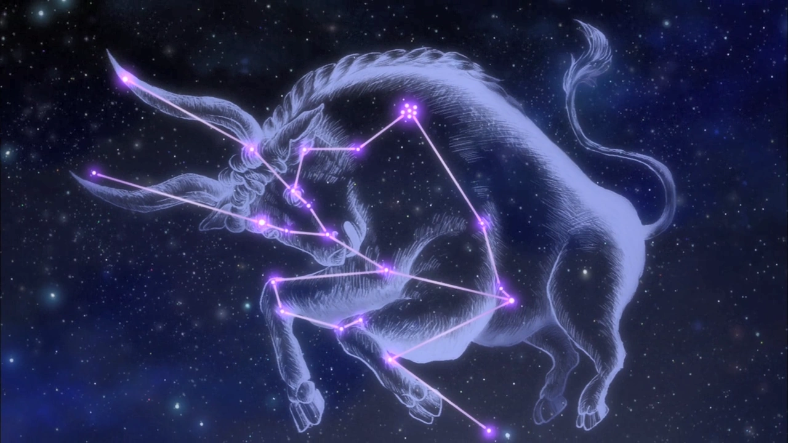
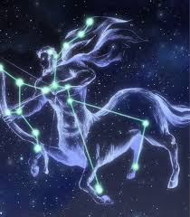
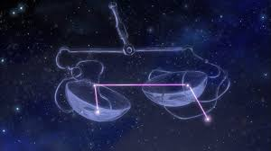

Vamos ver algumas constelações
Passe o mouse por cima das constelações




As estrelas são corpos celestes luminosos compostos de hidrogênio e hélio, que brilham devido à fusão nuclear. Elas variam em tamanho, cor e brilho, nascendo em nebulosas e tendo diferentes ciclos de vida, desde anãs brancas até buracos negros.
Agrupadas no céu, formam constelações usadas desde a Antiguidade para navegação e mitologia. Exemplos famosos incluem Órion, Ursa Maior, Escorpião e Cruz do Sul. Além de sua importância científica, as estrelas continuam a fascinar a humanidade, ajudando a desvendar os mistérios do universo.
Passe o mouse por cima das constelações